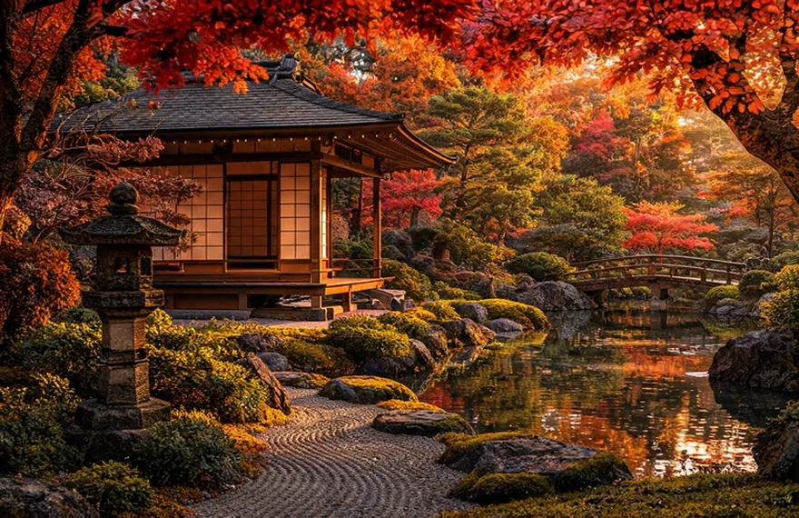

Haiku i poezja
Krótkie formy poetyckie inspirowane naturą oraz przemijaniem pór roku.
Pisanie wierszy stanowiło element kultury wielu warstw społecznych. W japońskiej literaturze ważną rolę odgrywały obserwacja szczegółu i skojarzenia z porami roku.
Samuraje byli także uczestnikami życia rodzinnego, szkolnego, artystycznego i religijnego. Odkryj, co robili poza polem bitwy i jakie tradycje rozwijały się w epoce pokoju.


Odrzucenie broni przed wejściem do herbaciarni na rzecz pokoju ducha.
W ceremonii ważne były przygotowanie miejsca, sposób podania czarki oraz uważne traktowanie gości. Z czasem stała się ważną częścią spotkań elit i sztuki codzienności.
Precyzja pędzla równoważna jednorazowemu cięciu mieczem.
Ćwiczenie kaligrafii wymagało koncentracji, znajomości znaków i sprawnej pracy pędzlem. Właśnie dlatego traktowano ją jako część edukacji ludzi wykształconych.
Samuraj nie spędzał całego życia na wojnie. Szczególnie w epoce Edo edukacja, obyczaje i sztuka miały duże znaczenie dla rodzin wojowników.
Krótkie formy poetyckie inspirowane naturą oraz przemijaniem pór roku.
Pisanie wierszy stanowiło element kultury wielu warstw społecznych. W japońskiej literaturze ważną rolę odgrywały obserwacja szczegółu i skojarzenia z porami roku.
Ogrody świątynne jako miejsca skupienia, obserwacji i refleksji.
Kompozycje z kamienia, piasku, roślin i wody były częścią krajobrazu artystycznego Japonii, choć samuraje wyznawali również inne tradycje religijne.
Dwie odmienne tradycje sceniczne o bogatej historii.
Nō rozwijał się pod patronatem elit, natomiast kabuki zyskało popularność wśród mieszkańców miast. Obie formy korzystały z muzyki, kostiumów i ustalonych konwencji.
Ośrodki życia wojskowego, urzędniczego i handlowego.
W ich pobliżu mieszkali rzemieślnicy, kupcy i służba. Rozwijające się ulice handlowe odzwierciedlały powiązania między dworem daimyō a gospodarką.
Stroje samurajów różniły się w zależności od epoki i sytuacji.
W codziennym życiu używano rozmaitych wariantów kimona i hakamy, a oficjalne spotkania wymagały przestrzegania zasad etykiety.
W wielu rodzinach ceniono naukę pisma, rachunków i zasad postępowania.
Synowie i córki rodzin samurajskich byli przygotowywani do różnych ról społecznych. Zakres nauki zależał od majątku, miejsca i czasu.